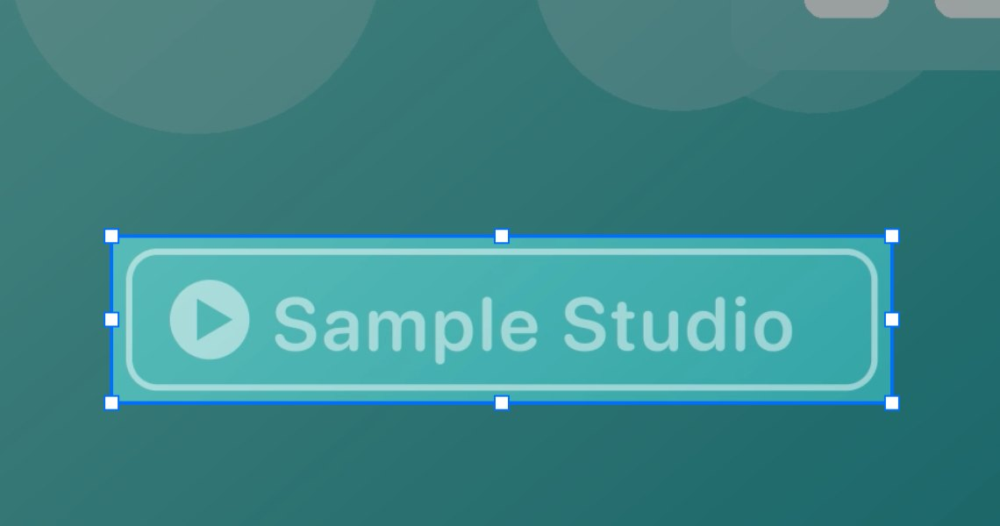
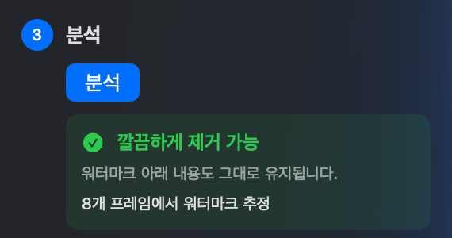
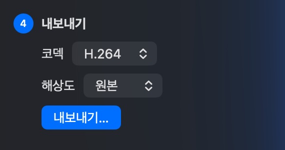
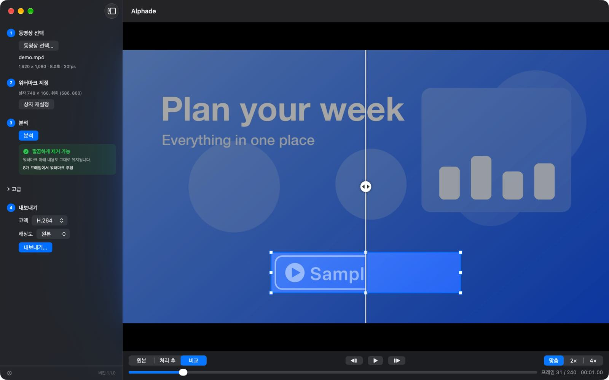

워터마크 지정
동영상을 열고 워터마크 주위로 상자를 드래그합니다.
흐리게 하지 않고 복원
워터마크를 흐리게 하면 얼룩이 남습니다. Alphade는 워터마크가 각 프레임에 어떻게 합성되었는지 알아내 거꾸로 되돌리므로, 그 아래 화면이 깨끗하게 돌아옵니다.


사용 방법

동영상을 열고 워터마크 주위로 상자를 드래그합니다.

Alphade가 동영상 전체를 분석해 얼마나 잘 복원할 수 있는지 알려 줍니다.

깨끗해진 사본을 H.264나 HEVC로, 원본 크기 그대로 또는 더 작게 저장합니다.
내보내기 전에
원본과 결과를 나란히 비교하고, 한 프레임씩 넘겨 보고, 4배까지 확대할 수 있습니다. 바뀌는 건 상자 안뿐이고, 나머지 화면과 소리는 그대로 유지됩니다.

업로드되는 것은 없으며, 계정도 필요 없습니다. Alphade는 어떤 데이터도 수집하지 않습니다. 자세한 내용은 개인정보 처리방침을 참고하세요.
분석, 미리 보기, 내보내기 모두 무료입니다. 결제할 것도, 체험판 제한도, 구독도 없습니다. 다운로드 파일은 Developer ID로 서명되었고 Apple의 공증을 받았습니다.
위치가 고정된 반투명 워터마크에 가장 효과적입니다. 지원되는 동영상 보기
Mac용 다운로드Homebrew로도 설치할 수 있습니다: brew install --cask vulcanshen/tap/alphade